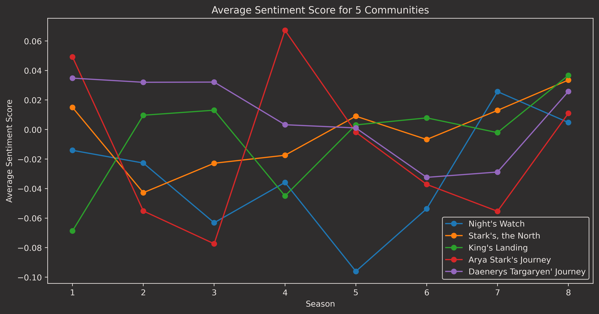

Game of Thrones
network analysis
Motivation
Our "Game of Thrones" dataset is a perfect platform to explore the intricate social structures, evolving character relationships, and textual data from this popular TV series. The dataset is divided into three sections: character information, episode details, and manuscript dialogues, which provide a comprehensive view of the show's universe.
To make this information accessible and engaging, we developed an interactive website that allows users to delve into the complex social structure of the show. The website showcases character affiliations, connections between different houses, and the evolving nature of relationships throughout the series.
By leveraging natural language processing techniques on the manuscript dataset, we analyzed character sentiment and its changes over time. This analysis reveals the complex and multifaceted emotions expressed by characters, demonstrating their loyalty, love, hate, and distrust towards allies and enemies alike.
Our website also tracks sentiment fluctuations, shedding light on how characters' emotions shift in response to significant events or plotlines. This feature adds depth to our understanding of the show's narrative and provides an engaging way for users to explore the Game of Thrones universe.
In summary, our interactive website offers a fascinating and comprehensive look at the dynamic social networks, intricate relationships, and emotional journeys within the Game of Thrones series, making it an invaluable resource for fans and researchers alike.
Basic Stats
From the episode / scene data set it can be observed that the average number of characters per scene is 2.91,
which indicates that most scenes are rather 'intimate' with only a few characters. This reveals that the show
places a strong emphasis on character development and dynamics . However, it is worth noting that the data set
may not accurately represent the number of characters present in large-scale battle scenes, which could skew this
average higher. In addition, the average number of scenes per character is 20.99. There is a total of 4165 scenes
in the entire TV-show, meaning that many characters do not appear that often. However, as can be observed from the
plot below, the main characters do appear way more than the average, indicating that a small subset of characters
plays a significant role in driving the narrative forward.
Number of scenes per character


Throughout the entirety of Game of Thrones, Jon Snow, Tyrion Lannister, and Daenerys Targaryen have the most number of scenes.
It is worth noting the development of the number of scenes for each character throughout the series.
In the first four seasons, all of the main characters, including Jon, Tyrion, and Daenerys, have roughly
the same number of scenes, with Tyrion having a slightly higher number. As the show progresses, and various
character arcs merge, there is a significant shift in which characters are considered main characters and which
are relegated to supporting roles. This shift is reflected in the number of scenes each character appears in,
with Tyrion, Daenerys, and Jon having a significant increase in the number of scenes they appear in, leaving a
significant gap between them and the other characters.
Arya Stark, Bran Stark, Sansa Stark, and Cersei Lannister are grouped together with a similar number of scenes,
but their character arcs are more side-arcs compared to the journeys of the top three characters. They all have
their own distinct storylines, but they are not central to the overarching plot of the show to the same extent as
Jon, Tyrion, and Daenerys.
Jorah Mormont, Jaime Lannister, and Davos Seaworth, on the other hand, occupy a spot in the lower end of the top
ten characters with the most number of scenes. This can be attributed to the fact that they serve as primary
supporting characters for Jon, Daenerys, and Tyrion, respectively, and are not central to the show's main plot.
Text and sentiment analysis
In our study of the Game of Thrones universe, we employed sentiment analysis to gain deeper insights into the emotional
landscape of the show. This involved preprocessing the textual data using natural language processing tools such as nltk,
which enabled us to eliminate stop words and streamline the text for further analysis. To ensure the focus remained on
meaningful words, we compiled a list of the 1000 most common words to filter out less interesting terms.
To perform sentiment analysis on the characters' dialogues, we used the Distilled BERT model, a powerful and efficient
natural language understanding model. By applying this model to the dialogues, we tracked the sentiment of each character
throughout the series, observing how their emotions evolved over the different seasons. Additionally, we applied this
approach to Louvain communities based on co-scenes, which provided further insights into the relationships between characters
and their shared experiences.
The results of our sentiment analysis were both informative and accurate, allowing us to closely rank major characters
in a manner comparable to expert evaluations. Our group member Nicolaj, a Game of Thrones aficionado, produced a sentiment
ranking of some of the most important characters in the series which our data-driven sentiment analysis aligns with pretty well .
This outcome demonstrates the power of leveraging advanced natural language processing techniques like Distilled BERT to
explore complex and multifaceted fictional universes like Game of Thrones.

When analyzing the sentiment of different communities throughout the seasons of Game of Thrones,
it was important to consider only those communities that had a significant impact on the series.
Thus, communities consisting of minor characters with only a brief appearance, such as prostitutes
or King’s Landing rioters, were excluded from the analysis.
We analyzed the sentiment of five key communities in Game of Thrones.
These communities were focused on story arcs at King's Landing, Winterfell,
Jon Snow's journey, Arya Stark's encounters, and Daenerys Targaryen's arc. The average sentiment of
impactful characters was calculated for each season to track sentiment development.
Notably, the sentiment of the Night's Watch, Arya Stark and Stark communities declines sharply in the first
half of the series due to various threats and losses. Arya Stark's journey with Sandor Clegane after her flight from captivity is marked by a rapid increase in sentiment.
In contrast, the sentiment of Daenerys'
community remains relatively positive, despite facing challenges
such as losing her husband and child, and managing her conquered territories.
Interestingly, Daenerys' community sentiment concludes with a positive sentiment score in season 8,
which does not align with the events in the series, including her descent into madness
and the death of her closest friends. This discrepancy highlights the complexities and
limitations of sentiment analysis in capturing the nuances of such an intricate narrative.
Based on an analysis of the characters in Game of Thrones, a sentiment ranking was created for the top 10 most
important characters, and this was compared to an "expert" ranking. The characters were evaluated based on their
experiences throughout the series and how their overall sentiment was impacted by those experiences.
Tyrion Lannister, despite facing multiple challenges, managed to have several enjoyable seasons and humorous dialogues,
ultimately becoming the "Hand of the King." Jon Snow witnessed the deaths of most of his family and the horrors of the
White Walkers, but found some inner peace after being exiled. Daenerys Targaryen went from being sold as a wife to a warlord,
to birthing three dragons, gaining an army, freeing slaves, and becoming queen. Although she ultimately went insane and
faced multiple hardships, her overall sentiment was not as negative as some other characters.
Cersei Lannister spent most of the show in control of King's Landing and was a terrible person who made various threats.
Despite this, her luxurious lifestyle and lack of captivity (aside from a brief period in season 5) helped balance her
sentiment. Jaime Lannister underwent a significant character arc, changing for the better, and although he lost his hand
and was held captive at times, his overall sentiment was not overly negative.
Arya Stark went through terrible things on her journey, resulting in mostly negative sentiment. Sansa Stark endured one
tyrant after another and was humiliated and tortured, resulting in mostly negative sentiment, although she ultimately
became the Queen of the North. Davos Seaworth lost his king Stannis halfway through the series, as well as his son in
season 2, but his sentiment was mostly positive compared to the rest of the characters on the show. Samwell Tarly was
mostly in good spirits, despite some initial challenges when he arrived at Castle Black, and the sentiment surrounding
him was positive.
Bran Stark should mostly be classified as neutral since he, as the Three-Eyed Raven, is cut off from emotions.
When comparing the sentiment model's average sentiment ranking to the expert's ranking, the sentiment model was able to capture most of the characters' sentiments. The expert rankings were as follows:
Number of script-lines per character


It is evident that throughout the television show, Game of Thrones, Tyrion Lannister has the most lines of dialogue.
This can be attributed to his sharp wit and tongue, as well as his prominent role as an advisor throughout all eight seasons.
As main characters are killed off throughout the series, the focus of the show shifts to other key characters, such as
Jon Snow and Daenerys Targaryen, whose dialogue numbers increase significantly from season 6 onwards.
Cersei Lannister's character arc takes place primarily between seasons 3 and 6, where she must navigate complex power
dynamics at court and deal with the aftermath of her children's deaths. Her dialogue count increases significantly during
season 5, where she briefly becomes the character with the most lines. This shift in focus towards Cersei's character
highlights the importance of her storyline in the middle seasons of the show.
Another character whose dialogue count fluctuates throughout the show is Theon Greyjoy. At the beginning of the series,
Theon has a significant number of lines, but his dialogue count drops drastically during season 2 after he is captured
and tortured. This can be attributed to the breakdown of his will and the trauma he experiences during his captivity.
weighted importance


When analyzing the importance of characters in Game of Thrones, it is essential to consider not only the number
of scenes or the number of dialogues alone, as each of these tells something different about the importance of a
character. To create a more comprehensive evaluation, a new dataset was generated that combines the number of
scenes and dialogues, each weighted at 50%.
Based on this weighted dataset, it becomes clear that Tyrion Lannister is one of the most important characters
in the show, despite not having the highest number of scenes. His sharp wit and cunning strategies make him a
crucial player in the game of thrones, and his dialogue-driven scenes are often pivotal in moving the plot forward.
Similarly, Jon Snow and Daenerys Targaryen, who have the highest number of scenes, are also among the most
important characters in the show. Their story arcs are central to the overall narrative, and their decisions
and actions have significant consequences for the other characters.
On the other hand, some characters who may have a high number of scenes but fewer dialogues, such as Bran Stark,
are not necessarily as important in the grand scheme of things. Bran's journey from a young boy to the Three-Eyed
Raven is a significant character arc, but his lack of emotions and reduced dialogue in later seasons means he is
less active and has less impact on the plot than other main characters.
Overall, the weighted importance of characters in Game of Thrones reveals that the number of scenes or
dialogues alone does not determine a character's significance in the show. Instead, it's their actions, decisions,
and impact on the plot that truly define their importance.
Creating the network
Our network was constructed with characters as nodes and co-scene appearances as edges. Edge weights were determined by the number of scenes in which characters co-appeared. We used the built-in Python function *community_louvain* to create communities and added the community number as an attribute for each node.
Modularity measures the network's division into distinct communities based on node connections. A modularity score above 0.4 is generally considered good and indicates well-defined communities. In our analysis, we achieved a modularity above 0.4, suggesting the presence of meaningful communities within the Game of Thrones network.
Co-scenes Network
Hover for more details about each character!
Visualizing unique co-stars through episodes
Above we see the number of unique people that a character has shared a scene with throughout the series.
The number of different people each character has shared scenes with can tell us a lot about the character's journey and
impact on the overall plot. One way to visualize this is by creating a timelapse of the number of different people each
character has interacted with throughout the series.
While most of the main characters eventually meet up at some point, some characters have had more unique interactions
with others due to their travels or story arcs. For example, Arya Stark, Tyrion Lannister, and Sansa Stark have traveled
to multiple locations early in the series and have had the most diverse set of interactions with other characters.
Arya Stark, in particular, benefits from a journey that has led her across almost every single main location and even
across the Narrow Sea.
This timelapse reveals interesting insights into the characters' development and relationships with others. For example,
Jon Snow initially has limited interactions with characters outside of the Night's Watch and his family, but this changes
as he becomes more involved in the larger conflicts of the realm. On the other hand, Cersei Lannister's interactions mainly
revolve around her family and court intrigue, reflecting her focus on consolidating power in King's Landing.
A word cloud based on tf-idf was generated using the entire script of Game of Thrones, with the top 1000 most common words removed. This technique helps to identify the most important and distinctive words used in the script, by giving more weight to words that are relatively rare but occur frequently in a particular episode or scene.
The resulting word cloud shows a range of themes and topics that are central to the show, including battles, politics, love, and betrayal. Some of the most prominent words include "king", "winter", "queen", "lord", "dragon", "kill", "fuck", "bastard", "drink", "wine", and "murder".
Overall, the word cloud provides a visual representation of the most important and distinctive words used in Game of Thrones, and offers insights into the show's themes, characters, and plotlines.
Discussion
The success of our Game of Thrones network analysis was facilitated by the comprehensive dataset available on Kaggle*, which was originally from Genius.com . This dataset, which included character information, relationships, scenes, and dialogue scripts from all eight seasons, saved us time and effort in data collection and cleaning.
We focused on character connections based on shared scenes and other attributes, allowing us to explore the complex social structure of the series and confirm various hypotheses. Our prior knowledge of the show enabled us to analyze results with expert-level depth.
Another successful aspect was text analysis, utilizing over 20,000 dialogues for sentiment analysis. We employed a pre-trained model to capture sentiment for each dialogue, character, and community, revealing character development and themes throughout the series.
Using a pre-made dataset presented limitations such as errors or inconsistencies in character names, which required time-consuming corrections. Gathering data via an API or web scraping could have improved accuracy but also posed challenges. Additionally, navigating the complex dataset consisting of various JSON and CSV files demanded considerable time and effort.
Being selective with information was necessary to stay within the project's scope and focus on specific areas of interest. Partitioning the network based on shared scenes led to some communities with irrelevant characters, a common issue in large networks, resulting in only five significant communities of interest.
Despite these limitations, we gleaned valuable insights into the complex social structure and character sentiments in Game of Thrones. Our analysis serves as a starting point for future exploration and research, with potential improvements in data collection and analysis methods.